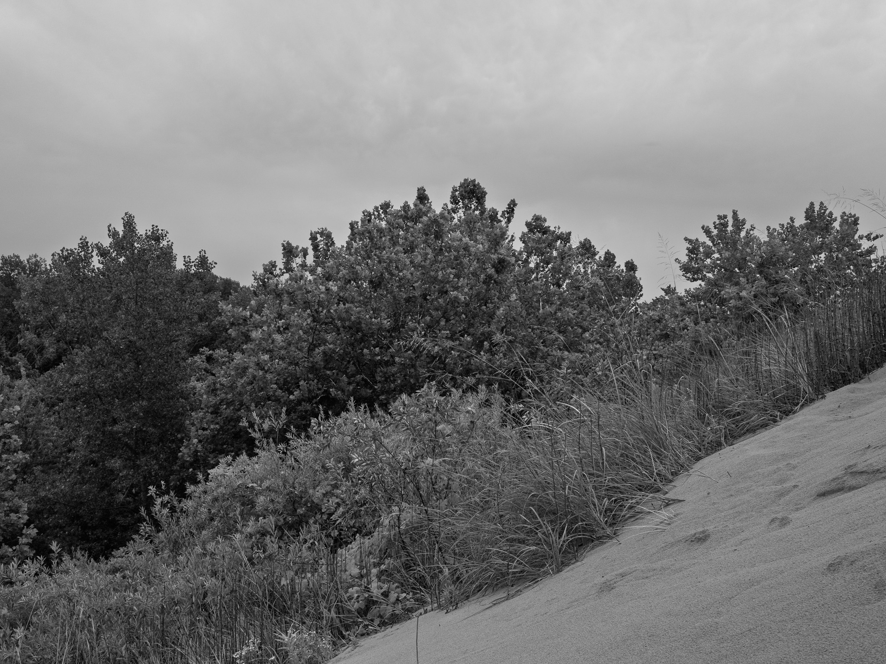
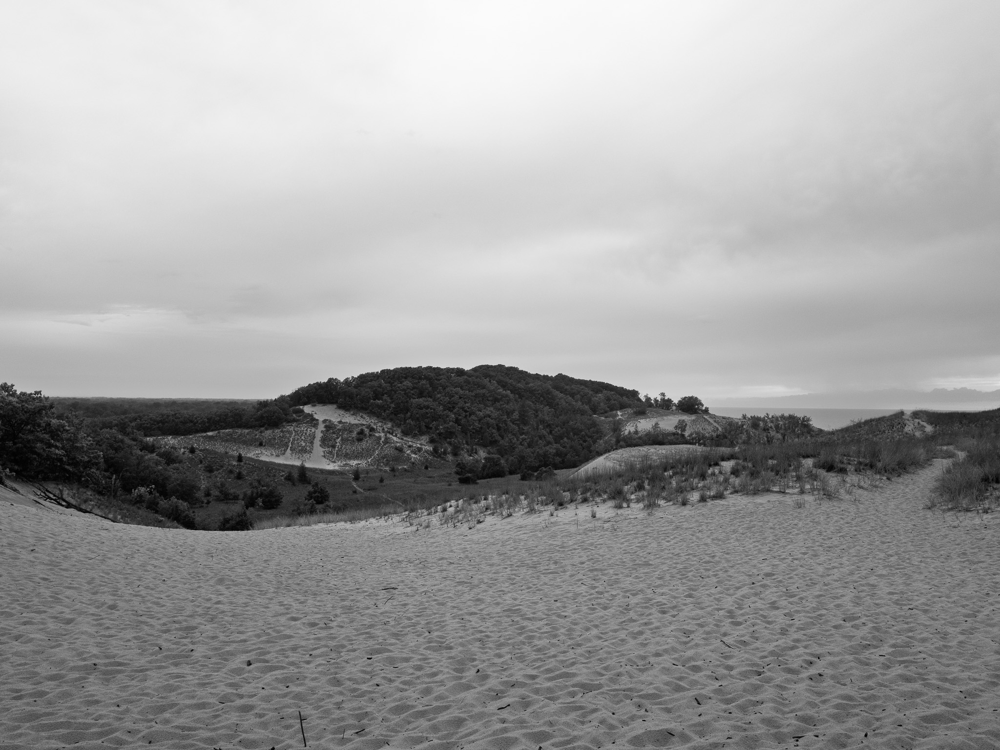
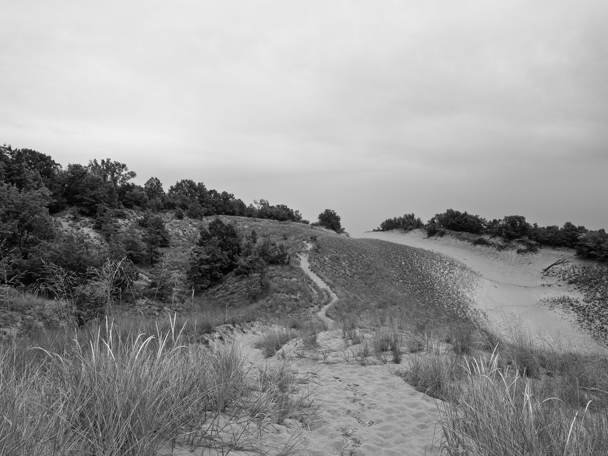
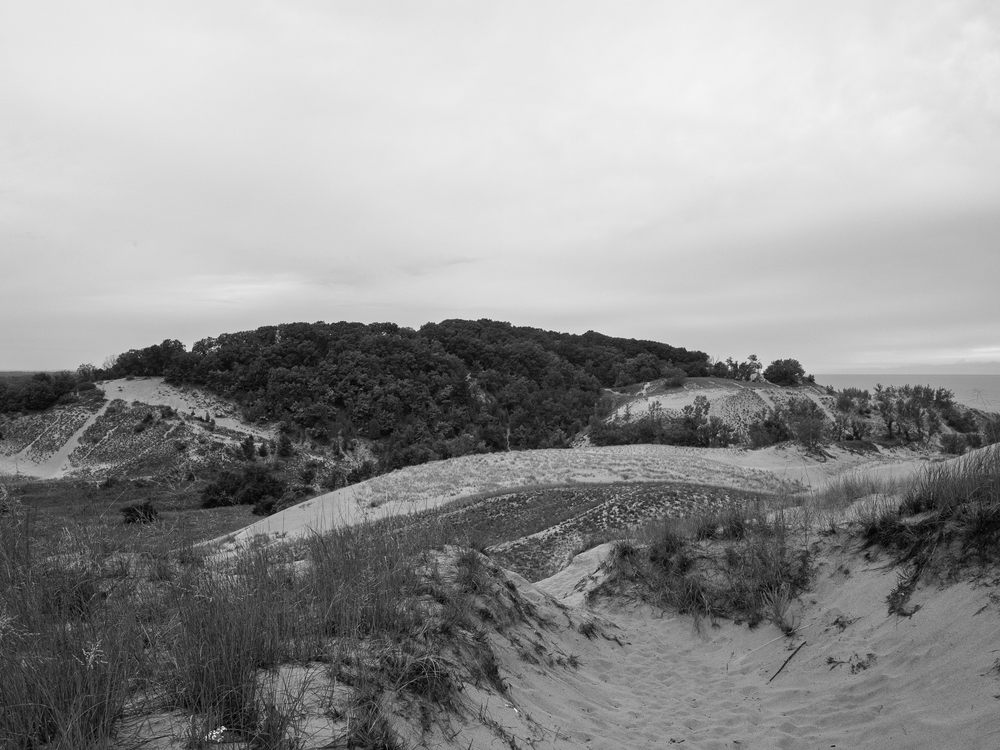
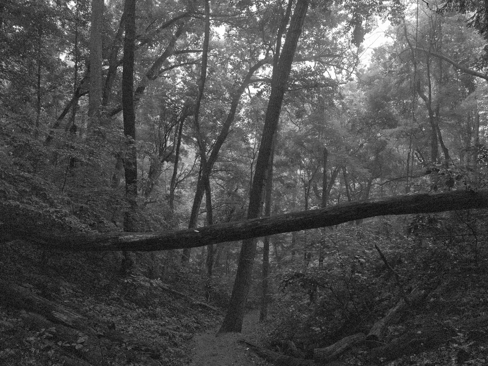
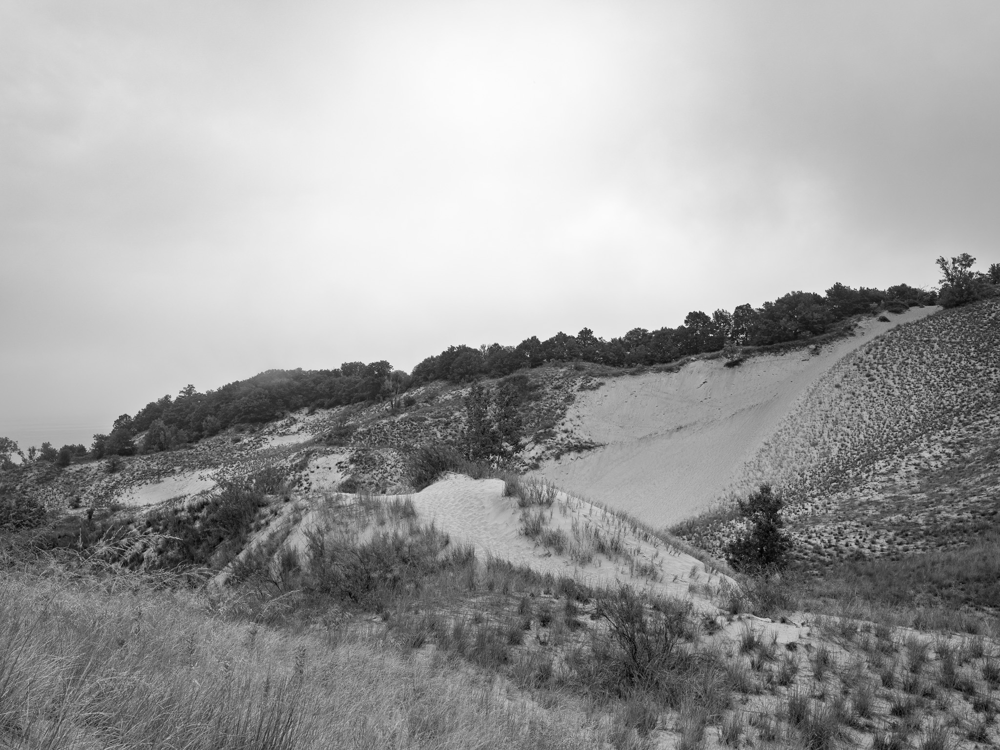

Public Lands Institute
Map
Images
Archive
About
Warren Dunes State Park
MI

Warren Dunes State Park 1 · 2026-08-05
_DSF4026.jpg

Warren Dunes State Park 2 · 2026-08-05
_DSF4030.jpg

Warren Dunes State Park 3 · 2026-08-05
_DSF4037.jpg

Warren Dunes State Park 4 · 2026-08-05
_DSF4040.jpg

Warren Dunes State Park 5 · 2026-08-05
_DSF4049.jpg

Warren Dunes State Park 6 · 2026-08-06
_DSF4066.jpg
View all 6 images →
← P.J. Hoffmaster State Park
Chain O'Lakes State Park →